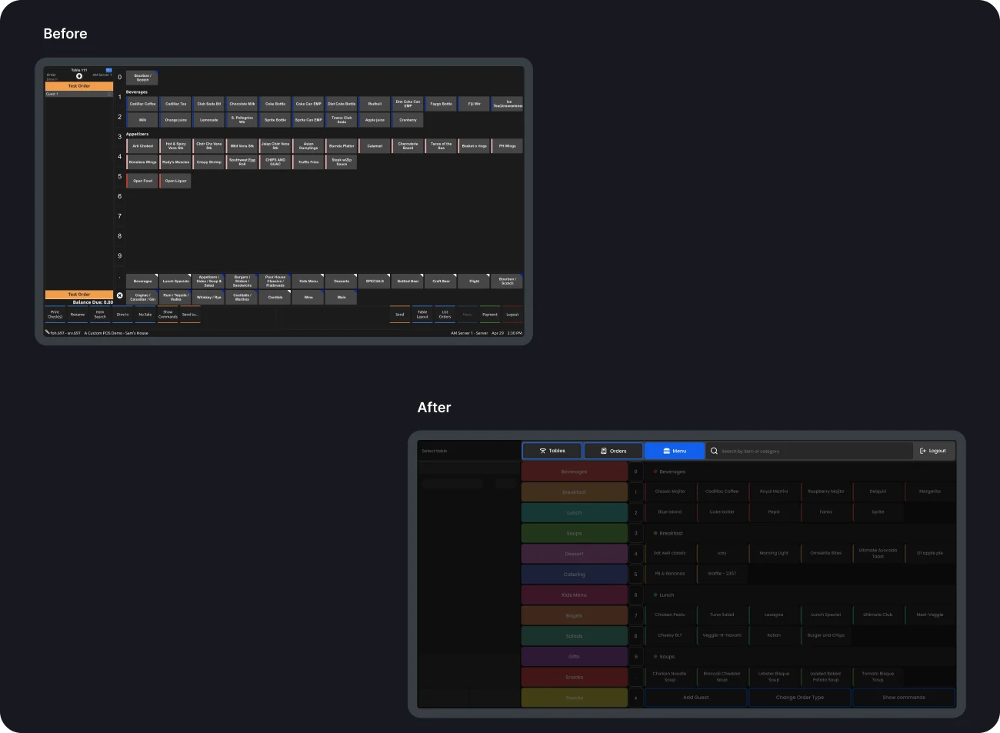
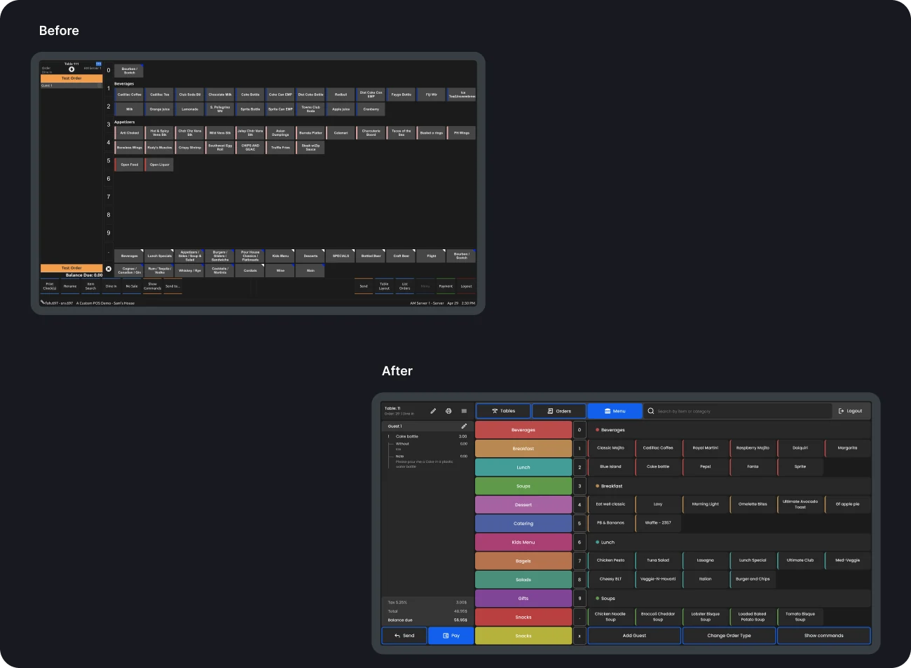
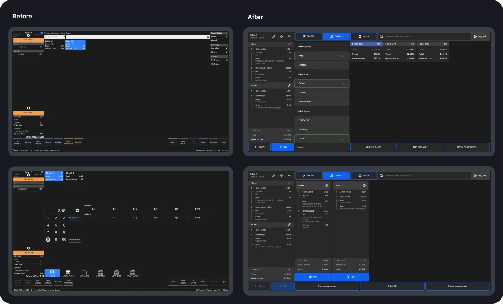
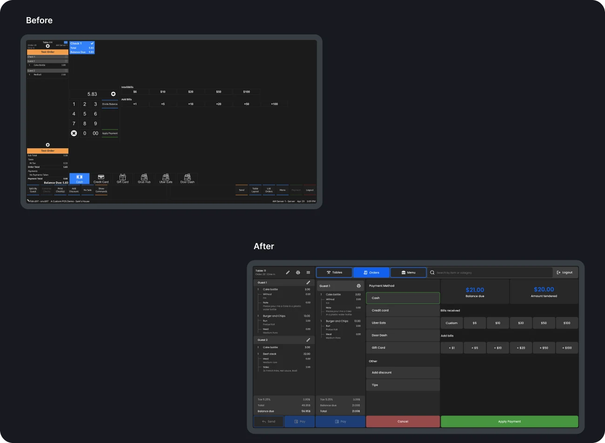
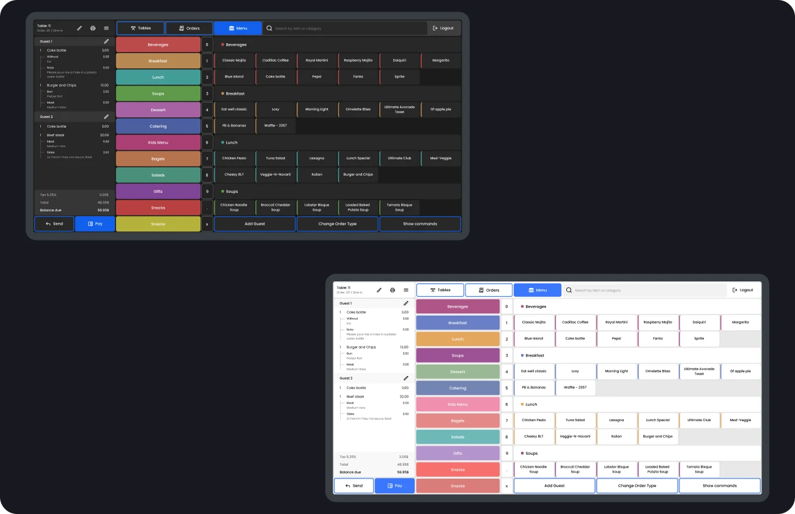

Restaurant POS · Redesign · 2023
SpotOn
Restaurant POS system improvement. SpotOn is a cloud-based point-of-sale solution for food ordering, tableside payments, customer retention and more.
- Problem
- Onboarding for waiters is too long and complex. The dark interface becomes unreadable in some settings, from dimly lit restaurants to bright summer terraces. Item names are unbalanced: some take four lines, others one
- Tasks
- Optimize adding menu items to the check and the checkout. Make this flow more accessible for beginners. Make the interface accessible in different working conditions
- Team
- UI/UX designers: Anastasiia Vetchinkina, Maks Kozhanov, Oleh Yefimov and me
- My role
- Described the action plan and strategy, conducted in-depth interviews, created a customer journey map from the findings, formulated hypotheses, redesigned the payment flow
Process
- Brief1 day
- Brainstorm2 days
- BPMN3 days
- Customer journey map4 days
- Prioritization of hypotheses2 days
- Usability testing of the existing product1 week
- Design1 week
- Usability testing after redesign1 week
Research
Mapping the business processes
My team and I created a BPMN diagram of the business processes behind the SpotOn POS: the flow of activities, decision points and interactions. It showed where the processes could become more efficient and the system easier to use.
Identified problems and their solutions
Six areas we redesigned
Area 01
Navigation
Problems
- The layout varies across screens, which makes quick navigation difficult
- Moving between the sections waitstaff need most (tables, menu, open checks) is slow
- On some screens it's hard to tell where you are in the system

Area 02
Menu & modifiers
Problems
- Too few visual cues (icons, colors, images) to navigate the screens
- A large number of menu items takes up much of the screen
- The modifiers screen has too many functions and actions, so waiters spend extra time understanding the buttons
Solution
The new menu stands out on the screen and scrolls vertically, so venues can load as many items as they need. Interviews showed that waitstaff first go to a menu category, which they remember by its color, and then pick the dish. We simplified the modifiers without reducing their capabilities: a clear sequence, convenient navigation and a user-friendly interface.

Area 03
Check
Problems
- Print, edit and send-to-kitchen buttons are scattered across the POS
- No graphical or logical hierarchy in the check, so viewing modifiers takes time
- Important guests need to be highlighted in the check or table name, so the kitchen sees the priority
Solution
The new check makes dish settings easy to read. In interviews, waiters told us that finding a dish in the check is easy, but its settings (meat doneness, extra bacon) are not always clear.

Area 04
Orders & split check by guests
Problems
- Check filtering is hard to see and understand
- The order list is full of actions unrelated to orders, while order actions are hidden in other menus
- Checks split by guest are visible only on the payment screens
Solution
We moved check filtering to a more prominent position, in line with our modular system concept. Order actions such as splitting a check by guest and applying discounts are now on the screen. A dedicated screen shows each guest's check with actions to combine and print all checks.

Area 05
Payment
Problems
- The layout of the payment screen is unclear: it's hard to see which element relates to which action
- The payment screen holds many actions unrelated to payment, which adds complexity
Solution
We removed actions unrelated to payment and restructured the layout to match the system concept. For cash payments, the waiter enters the amount given by the guest, or a custom amount, and proceeds.

Area 06
Light theme & flexibility
Problems
- Eye fatigue: during long shifts, bright lighting and a dark background tire the eyes, which lowers productivity and increases errors
- Trouble outdoors: strong sunlight and glare make the screen hard to read
Solution
Both themes, switched by waitstaff depending on the environment and their preference. The light theme improves readability and reduces glare outdoors in bright sunlight. The dark theme suits dim light, as it doesn't produce much unwanted light.

Validation
Tested with waiters before and after the redesign
We ran usability testing of the existing product and of the redesign. The waiters we tested were from Ukraine, not the United States, which could have influenced the results.